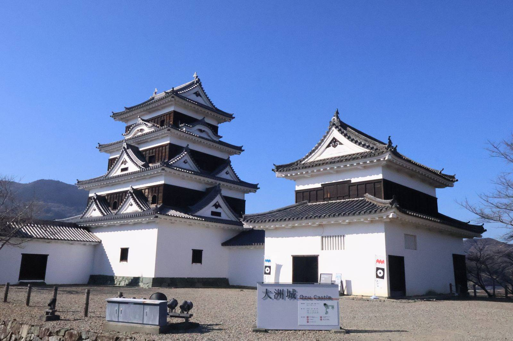

大洲のいま ・ 出典: OZU NEWS2025年５月号 2025年5月の資料 ・ 約7分で読める
大洲城・臥龍山荘、まさかの来館者５万人。19年ぶりの快挙

 メモう
メモう
大洲城と臥龍山荘、どっちも1年の入館者が5万人をこえたんよ。
臥龍山荘は初めて、大洲城は19年ぶり。
世界の賞をとったのと同じ年の出来事なの。
3行でいうと調べた資料 7本
- 令和6年度、臥龍山荘53,308人・大洲城50,056人と、そろって年5万人を達成
- 臥龍山荘は史上初、大洲城は2006年以来19年ぶりの大台
- 世界の持続可能な観光地アワードのシルバー受賞と同じ年の出来事だ
「OZU NEWS」2025年５月号に載ってた実績報告が地味にすごかった。
大洲の観光地域づくり法人「キタ・マネジメント」の令和６年度実績で、臥龍山荘の来館者が53,308人、大洲城が50,056人。
それぞれ年間５万人を達成したらしい。臥龍山荘は史上初、大洲城にいたっては19年ぶりとのこと。
数字だけ見ても嬉しいけど、「そもそも前はいつ５万人を超えてたの？」が気になったので、もう少し掘り下げてみた。
「19年ぶり」は、何と比べての19年なのか
大洲城の観覧が始まったのは2004年。天守が木造で復元・再建されたのがこの年で、 そこから城として一般公開されている。
キタ・マネジメントの発表によると、前回５万人を超えたのは2006年。
そこから数えて19年目にあたる令和６年度、ようやく再び５万人ラインに届いたことになる。
裏を返せば、2007年から令和５年度までの実に18年間は、大洲城の年間来館者が５万人に達しなかった、ということでもある。
一方の臥龍山荘は「史上初」の５万人超え。同じ城下町の観光施設でも、大洲城が「復活」なのに対して、 臥龍山荘は「新記録」というのが面白い違いだと思う。
シルバーアワードって、実際どれくらいすごいのか
記事にあった「世界の持続可能な観光地アワード」シルバーアワードは、国際的な非営利団体 グリーン・デスティネーションズが認証する制度。2024年９月23日、大洲市の受賞が 発表された。
審査対象は「文化と伝統」「観光地マネジメント」「自然・環境」「社会的幸福」など、持続可能な観光に関する国際基準84項目。
このうち76％の項目で基準を満たしたことで、「70％以上80％未満」に該当するシルバーアワードとなった。
同じシルバーアワードを受賞した国内の自治体には、北海道ニセコ町（2023年）、香川県小豆島（小豆島町と土庄町・2024年）、岐阜県高山市（2024年）がある。
ちなみに一段上の「ゴールドアワード」は、国内では岩手県釜石市（2024年）だけが受賞している。
大洲市はまだゴールドには届いていないけれど、全国的に見ても名前が並ぶ顔ぶれの中に入っている、というのがこの賞の位置づけらしい。
町並みも、じわじわ動いている
インバウンドツアーは284件、広告換算費は5.8億円。台湾での商談会にも参加していたみたい。
町並みの面でも動きがあって、旧藤本医院を改装した古民家モールがオープン、鵜飼いの新造船「清流１号」も就航、肱南地区には新しく３店舗が出店したそうだ。
この3つが具体的に何なのか、追いかけてみた。
古民家モールに入っているのは、5つの店
旧藤本医院は、その名のとおり内科と外科の医院だった建物である。長く空き家だったものを2023年度に改修し、2024年7月にオープンした。住所は大洲483。市の観光サイトは、館内に「当時の面影が残る」構造が保たれていると書いている。
入っているのは5つの店だ。雑貨屋マハリタ（ファッション・文具・インテリアの雑貨）、つまみ細工 初衣（花飾りの製作と販売）、niko.358（ステンドグラス作品とアイシングクッキー）、クレア商會（新刊・古書・雑貨の書店）、そしてAFTER WARD（古着屋。2026年3月オープン予定）。
医院の建物に、雑貨と花飾りとステンドグラスと本と古着が入っている。5つのうち4つが、いわゆる「作る人」の店だ。
新造船は、畳をやめて椅子にした船だった
鵜飼いの屋形船「清流１号」は、ただの新しい船ではない。畳に座る形をやめて、椅子とテーブルにした船である。
理由がはっきりしている。高齢の人と、外国から来た人が座りやすいようにするためだ。中央には広い通路を取り、休憩のときに動きやすくしてある。企業版ふるさと納税を使った新造船プロジェクトとして進められた。
日本三大鵜飼のひとつという看板を守りながら、座り方のほうを変えたということになる。就航に合わせて、貸切で使う団体に養老酒造の純米大吟醸を贈る記念キャンペーンも行われている。
なお「肱南地区に新しく3店舗」については、キタ・マネジメントの実績報告に件数として載っているだけで、どの3店舗なのかを名指しした資料は見つけられなかった。古民家モールの5店のうち3つを指している可能性はあるが、確かめられていない。
数字の裏側で、実際に歩いて見える景色も少しずつ変わっているということだと思う。
増えるほど出てくる、新しい悩み
一方で「オーバーツーリズム対策・多言語対応の強化」も令和７年度の観光庁事業として採択されていて、 多言語の看板整備やマナー啓発、車両進入の緩和なども進めるらしい。
人が増えるのは嬉しいことだけど、その分、混雑やマナーのトラブルも増えるはず。
浮かれて終わりにせず、増加と同時に対策もきちんと進めているところに、大洲の観光地域づくりの本気度を感じた。
城下町の外でも、同じことが起きていた
この記事で追いかけたのは、大洲城と臥龍山荘という城下町の数字だった。 市議会の会議録を読んだら、そこに入らない場所の話が出てきた。
令和6年12月の定例会。インバウンド対応について質問した議員が、 最後に自分の体験を述べている。前の週の土曜日に白滝公園へ行った、という話だ。
そのときに外国人の、いわゆるインバウンドのお客さん、ミャンマーからだったか複数名のお客さん、そして十数名のフィリピンからのお客さんがおられたんです。日本人より多いです、観光客が。何でこういうところに来られるのを知ってるのかなという（後略）
大洲市議会 令和6年12月定例会（3日目）会議録
白滝で、日本人より外国人のほうが多かった。 議員は「今までだったら東京とか京都とかそういうところによく行かれてたんじゃないかと思ってたんですけれども、 案外今の外国の方っていうのは、こういう地方の観光地っていうのに目を向けられておるようです」と続けている。
臥龍山荘53,308人、大洲城50,056人という数字は、 入館者を数えられる施設のものである。 滝には改札がない。数字に出ないところでも、同じことが起きていたことになる。
受け入れ側で、静かに進んでいたこと
同じ議会で、市の環境商工部長が受入れ環境の整備状況を答えていた。 この記事に書いた「多言語対応の強化」の中身が、そこに具体的に並んでいる。
| 項目 | 何をしたか |
|---|---|
| 公式サイト | 大洲市公式観光情報サイトVisitOzuに多言語翻訳機能を導入。まず英語と中国語 |
| 案内サイン | QRコードを読み込むと英語や中国語の案内へ誘導できる |
| 通信 | 市が管理する観光施設にフリーWi-Fi |
| トイレ | 国の補助事業を活用して洋式化改修 |
| 店の多言語対応 | 愛媛県が委託する多言語コールセンターが、施設案内や飲食メニューを最大9言語まで無料で翻訳 |
| キャッシュレス | 令和5年2月時点で435店舗が国内通信事業社4社のいずれかに対応。新規導入には機器購入費の一部を支援 |
県が9言語の電話通訳を無料で用意しているというのは、 調べていていちばん「知らなかった」と思った話だった。 市は商工会議所や商工会と連携して周知していきたい、と述べている。
誘客の相手は、決まっている
では、誰を呼ぼうとしているのか。それも答弁に出ていた。
市はキタ・マネジメントと連携して、 欧米豪、香港、台湾の旅行会社や旅行代理店に対して 観光プロモーションと商談を行っている、という。 狙いは「特に宿泊客を誘客することによって滞在期間の延長及び観光消費額の増加を図る」ことである。
来館者数を増やすことが目的ではない。 泊まって、長くいて、使ってもらうことが目的だ、という整理になっている。 その意味では、5万人という数字は途中の指標ということになる。
なお、外国人観光客と市民で入館料に差をつけてはどうか、という提案も同じ議会で出ていた。 市の答えは慎重だった。 「国籍に基づく不合理な差別に当たる取扱いではないかというような議論もありますので、 慎重でなければならないと考えており、事例などの調査を行いながら研究してまいりたい」。
次に市が見ているのは、施設の優先順位
その先の話も、令和8年3月の定例会で市長が述べている。 数を増やす段階から、施設をどうするかの段階へ移っている。
市長は、既存の観光施設について 「これまでに実施した施設の経営診断結果や利用の状況、施設の老朽度、地域のニーズ等を踏まえ、 優先順位を定めて再整備を含めた維持管理方法を検討してまいります」と答えていた。
「経営診断」という言葉が出てくるのが目を引く。 来館者数だけでなく、経営として見たときにどうかを材料にする、ということになる。
特に温泉・宿泊施設や交流拠点施設については、 「滞在時間の延長や観光消費額の増加に向けた魅力向上策を現在関係者と協議しながら進めている」という。
さらに、建設中の山鳥坂ダムの周辺を新たな拠点の1つと位置づけ、 既存の観光施設や体験・交流施設を結ぶ動線をつくって周遊性を高める、という構想も語られていた。 ダムの完成予定は令和14年度である。
臥龍山荘の史上初と、大洲城の19年ぶり。 その数字を追いかけて始めた記事だったが、 市のほうはすでに「何人来たか」から「どれだけ長くいて、いくら使うか」へ、 見るものを移していた。 5万人は、通過点として扱われている。
出典・参考にした資料
OZU NEWS 2025年５月号（一般社団法人キタ・マネジメント） 令和６年度実績報告を公開いたしました（一般社団法人キタ・マネジメント） 「世界の持続可能な観光地アワード」シルバーアワードを受賞しました（大洲市ホームページ） 古民家モール 旧藤本医院／大洲市公式観光情報VisitOzu（もとが内科・外科の医院だったこと、2023年度改修・2024年7月オープン、入居5店の名前と業種を取った。2026年9月5日閲覧） 【大洲市】「肱川に浮かぶ“おもてなし”屋形船」新造船プロジェクト／企業版ふるさと納税の総合窓口（畳をやめて椅子と机にした理由、高齢者と外国人客への配慮を取った。2026年9月5日閲覧） 大洲市議会 令和6年12月定例会 会議録（3日目）— 白滝公園で日本人より外国人観光客が多かったという議員の体験、VisitOzuの多言語化・フリーWi-Fi・トイレ洋式化・県の多言語コールセンター9言語・キャッシュレス435店舗、欧米豪と香港・台湾へのプロモーション、入館料の内外差についての慎重な答弁 大洲市議会 令和8年3月定例会 会議録（3日目）— 既存観光施設を経営診断結果や老朽度で優先順位づけして再整備を検討すること、温泉・宿泊施設の魅力向上策、山鳥坂ダム周辺を拠点とした周遊ルートこの記事をサイトに掲載した日: 2026/07/26